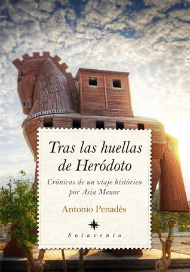

Tras las huellas de Heródoto
Reseña por Jorge I. Zuluaga

Ver reseña en GoodReads (necesita cuenta)
Recientemente terminé de leer los 9 libros de la Historia de Heródoto. A pesar de no ser historiador, ni académico de ninguna disciplina que requiera la lectura de este tipo de fuentes, como aficionado curioso de la historiografía y lector impaciente, me ha llamado poderosamente la atención buscar e intentar leer esos libros que muchos autores y autoras citan cuando hablan del pasado. Aunque no fue fácil devorar un texto escrito hace más de 2 500 años, la experiencia fue asombrosa y la sensación de estar más cerca de la historia de Grecia y en general del cercano oriente se ha incrementado con esta lectura.
Buscando ampliar mi experiencia de la lectura de Heródoto, descubrí una conferencia de Antonio Penadés en la que comentaba este libro suyo "Tras las huellas de Heródoto", que a la larga se me antoja, para cualquiera que quiera emprender la lectura de Heródoto, una excelente continuación, 2500 años después, de la obra pionera del denominado padre de la historiografía.
Como sugería al principio, el texto es una combinación de libro de viajes, en el que encontramos los mismos elementos que otros libros de este género, la descripción de una aventura del autor en un recorrido moderno por lugares de interés arqueológico o turístico; pero también el libro contiene amplios pasajes dedicados a la Historia, la contada por Heródoto o la reconstruida por la historiografía más reciente.
Esta naturaleza dual, hace de "Tras las huellas de Heródoto" un libro muy agradable de leer, lleno de aventuras sencillas y curiosas y al mismo tiempo de buena información histórica.
Leer un libro de Historia puede resultar una actividad aburrida y difícil si no tienes previamente un conocimiento, relativamente amplio, del contexto del tema sobre el que trata el libro. Sin embargo, buenos divulgadores como Antonio Penadés logran que la Historia sea atractiva y fácil de leer. Con una combinación de un lenguaje claro, expresiones informales, pero sin sacrificar la rigurosidad requerida, Antonio logra conectarte con historias relativamente ajenas y remotas.
Me quedaron muchísimas ganas de visitar todos los lugares descritos por Antonio. Ese es otro don que tienen los buenos autores de libros de viajes: te hacen creer que visitar lugares exóticos, viajar durante muchas horas buscando un sitio arqueológico medio abandonado, arriesgar la vida para visitar una acrópolis, dormir en hoteles medio destartalados e interactuar con personas con las que no puedes comunicarte en lo absoluto, son todas actividades emocionantes.
Este libro es el primero de una bilogía. Ya tengo en mi poder el segundo "Viaje a la Grecia clásica" y estoy impaciente por empezarlo.
Después de Heródoto de Halicarnaso y Penadés de Hispania, Jonia y Grecia no serán lo mismo.